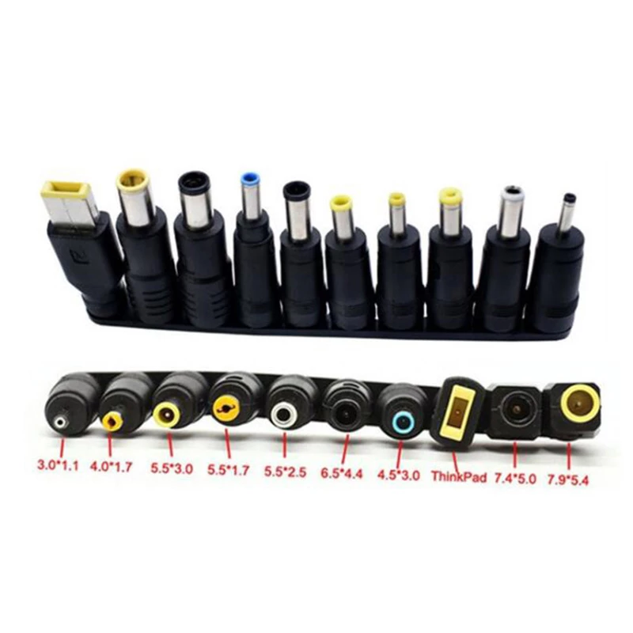
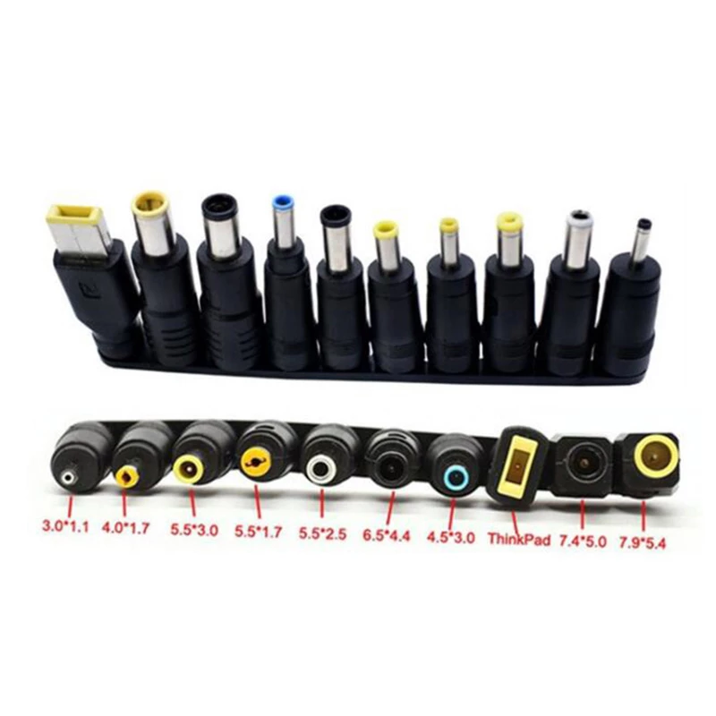

Mes réalisations¶
- Projet
- Auteur
J.Soranzo
- Societe
- Entity
- Sources
- Date de création
02/2022
- Date dernière maj
07/10/2022
Articles dédiés¶
- Module primaire mesure Tension/courant de la ligne
- Module alimentation stabilisée DPS3005
- Module alimentation primaire à base de batterie PARKSIDE de chez LIDL
- Module USB 2x 5A avec ampèremètre
- Module oscilloscope DSO138
- Module ventilateur
- Module triple tiny voltmètres
- Module Volt/amperemetre couplés
Réalisés/terminés¶

De la gauche vers la droite : module tension/courant, USB 5V 3A, Oscillo, Alimentation stabilisé, re USB 5V 33A
Toujours de gauche à droite les modules Volt/ampèremètre, triple voltmètre, XTprolongateur et ventilo
Note
Les chapitres suivants ne sont pas nécessairement dans l’ordre de création des objets. Pour connaître l’avancement du projet ainsi que la liste des objets à venir: voir le chapitre avancement.
Avant d’entrer dans le vis du sujet¶
Warning
ATTENTION
Tous le modules ont une masse commune.
XT60 male ou femelle¶
Le Lecteur attentif remarquera que je me suis emmêlé les pinceau entre XT60 male et femelle, mais comme tout mes fichiers sont nommés avec cette erreur, je la garde.
Règles de nommage¶
Ci-dessous les règles que j’ai utilisé pour nommer les objects dans Freecad
nom du fichier = nom de l’objet (de préférence sa vrai référence)
chaque objet à un part dans FreeCad
chaque part à SA spreadsheet cela permet d’avoir plusieurs fois le même terme (ex: long, larg)
spreadsheet = nomDeLObjetSp (permet d’identifier les spreadsheet parmi d’autres noms)
un diamètre = diam
une longueur = long
une largeur = larg
une hauteur = haut
une épaisseur = ep
un entraxe = entraxe
une distance entre 2 points = dist
on ne répète pas le nom de l’objet dans les éléments de la spreadsheet
On suffixe en commençant par le plus générique
posX et posY font référence à la manière dont le scketch s’affiche de base X axe des abscisses Y celui des ordonnées (indépendant du repère XYZ de l’espace 3D de FreeCAD)
exemples:
bornSp.bornierVisTrouDiam est incorrecte, alors que bornierSp.VisTrouDiam serait correcte
suffixe : VisTrouDiam, VisTrouPosX….
Versionning¶
Pas de git pour ce projet ! les versions soit 3 digits soit 3 digits. 1 sous version. Je suis indécis. J’aurais tendance à tendre vers 3 digits seuls (ça fait moins de caractères à taper)
Passage sous git le 17/04/22 : on perd la notion de version numérotée. On peut s’en sortir avec le hash du commit mais ce passage sous git va de paire avec le passage à des références dans freecad pour ne pas avoir de nom de référence qui change tout le temps… Mais on perd aussi en facilité en effet avec le versionnning fait sur le nom du fichier on travaille sans changer d’outil…
Génération des nomenclatures csv pour Restructured text¶
Outil : Libre office calc (c’est un des rare qui permette de chaisir l’encodage et le séparateur)
Faire : Fichier / Enregistrer une copie sous…
Choisir UTF-8 et , comme séparateur
Alimentation des modules en base tension¶
Pour les modules qui ont besoin d’une tension inférieur à la tension d’alimentation principale (19 à 24v)! Comme le module oscilloscope par exemple
Module convertisseur réglable 2A¶
Ce convertisseur est nécessaire quand les éléments du module ne supportent pas des tension d’entrées comprise entre 15 et 24V.
Il convient alors de régler la tension de sortie du convertisseur à la bonne valeur
Convertisseur DC/DC 1A réglable
Alimentation du rail : 19 à 25V environ
Courant de sortie nominal annoncé : 2A
Ce style de DCDC:

13.57€ par 10pcs chez Banggood lm2596 DC-DC 4
Warning
Pb avec le model 3D récup sur GARCAD
Écart entre trou mesuré : 31mm versus 30.26 sur le step
Uin : 35V max
Uout : de 1.35V à 35V mouais !
pb la fixation: 2 trous M3 mais:
Warning
ATTENTION Mettre des vis nylon : risque de contact avec un broche de capa

Tige laiton (connexion des XT60)¶
Plutôt que d’utiliser des fils de cablage, j’ai utiliser des tiges rigides en laiton.
Tige en laiton diam 2 pour les rails d’alimentation des modules chez Leroymerlin diam 3 (le mieux serait du 2)
ou manomano tous les diamètre ou chez AMAZON 20 Pièces T2 Baguettes de Soudage en laiton de 2mm x 250mm 6
Position des tiges en laiton¶
20 tiges de 250mm 14€ soit 0.7€ les 250mm ou encore 0.0028€/mm
Le model de base 35mm large¶
Modèle¶
J’ai entièrement repris le modèle de base sous Freecad avec spreadsheet paramétrable.
Face avant détachable & ventilation. Fortement inspiré du model de Cordless
Ajout également d’une vis pointeau et d’un insert fileté pour bien tenir les XT60
Insert filetés¶
Sur AMAZON ruthex Boîte M2 + M3 + M4 + M5 insert fileté 7
Dimensions:

Un fer à souder dédié sur AMAZON: Station de Souder, HANMATEK SD1 8
Calculs relatifs à la ventilation¶
Calculer le nombre de fentes.
On connaît:
la largeur du modules
l’épaisseur de la parois
la largeur des fentes
l’écart entre les fentes
On veut le nombre de fentes et la longeur de la répétission
En effet dans Freecad, il faut ces 2 paramètres:
grandA =(largeurModuleBase - 2 * epaisseurParois) / 2
ventilLargeurRepet =grandA - ventilEcartfente / 2 - (ventilLargeurFentes + ventilEcartfente)
ventilNbrFents =ceil(ventilLargeurRepet / (ventilLargeurFentes + ventilEcartfente)) + 1

Profile¶

Côtes XT60 mauvaise :
largeur = 8
largeur du sommet = 3
Juste :
hauteur = 15.75 mais affaissement des couche d’impression à compenser
le 13.25


Switch ON/OFF¶
J’ai eu la chance de récupérer un carton entier de ces switch donc, je les utilise. Libre à vous de changer.
Toujours est-il que voici la référence pour les flemmards : chez Farnell C1500ATAAA 9
Fabrcant ARCOLECTRIC (BULGIN LIMITED).

Cette version est assez encombrante 14x30mm. Mais c’est celle que je choisi de base car j’en ai 2 cartons pleins :-()
Autre version plus petite 15x10 malheureusement ceux que j’ai commander sur amazon devaient mesurer 20x10 et à l’arrivée ils sont plus petits mais du coup ça peut être utile.
Nomenclature de base¶
Désignation |
Fab |
Ref fab |
Qté |
Pu |
Pt |
|---|---|---|---|---|---|
Insert Fileté M3 |
RUTHEX |
sans |
4 |
0,10 € |
0,40 € |
Switch |
ARCOLECTRIC |
C1500AT |
1 |
2,70 € |
2,70 € |
VIS THC M3x6 |
BRICOVIS |
TC HC M3x6ANEF |
2 |
0,06 € |
0,12 € |
VIS STHC M3x10 |
BRICOVIS |
STHC Pointeau M3X10ANEF |
2 |
0,08 € |
0,17 € |
XT60 MALE |
AMAZON |
1 |
0,60 € |
0,60 € |
|
XT60 FEM |
AMAZON |
1 |
0,60 € |
0,60 € |
|
Tige Laiton diam 2mm |
AMAZON |
2*18,62mm |
2 |
0,052 |
0,10 € |
TOTAL |
4,69 € |
Module primaire: abandonné¶
Le but de se module est de se placer devant le module prmaire afin de recevoir tout type d’adaptateur secteur.
AC/DC adaptateur (alimentations de PC portables):
 

prise pc DELL, diamètre extérieur mesuré: 7.4mm
prise MSI : diamètre extérieur 7.4mm, même adaptateur pour les TS-100 que pour DELL
- prise alim Toshiba ADP-75SB BB
diamètre extérieur 5.5
diamètre tige intérieur : 2.7mm voir 2.8difficile à mesurer
Embase verte du LAB à vis 12 conviennent, l’âme 2mm environ chez AMAZON5.5x2.1 DC5520
Prise male pour le TS100 : l’âme centrale semble plus grosse ci bien que la prise TOSHIBA avec lame de ressort convient mais pas les verte du LAB. Serait : Port DC5525 5.5x2.5. Chez AMAZON DC5525 13
N’ayant pas trouvé simplement d’embase 7.4x5.0mm j’opte pour un adaptateur vers 5.5x5.2 encore du AMAZON Kafuty 5PCS 7.4 x 5.0 x 0.6MM Connecteur d’adaptateur d’alimentation 11
Donc en résumé pour ce module : 1 XT-60 normal + à l’arrière ou du même côté que le XT ou les 2:
Note
Finalement:
Ajout de 2 prises DC5525 et DC5521 au module mesure de Tension/courant de ligne ci-après.
Outillage pour souder les XT60¶
Voici un outillage permettant de souder les tiges laiton aux XT60 au bonnes dimensions.

Il suffit de régler la partie de droite à la largeur du module considéré.
Il y est équipé d’un réglet disponible chez Castorama
Largeur : 24mm +/-1 et moins de 1mm d’épaisseur
Capot de Prise XT60¶
Afin d’améliorer la prise en main des XT60 connecté à l’extrémité de câbles, il s’agit de créer un boîtier pour les connecteurs XT60 mâle et femelle.
Ma vision¶
Vis pointeau pour tenir fermement dans son logement, le connecteur.
J’ai utilisé Freecad v0.20 afin d’exploiter la nouvelle fonctionnalité de configuration.
Les explications sont fournies sur le wiki Freecad Configurations tables 16
Rendus Freecad¶
XT60 covert mâle |
XT60 covert femelle |
|---|---|
|
|


{kind=link}
{kind=link}
{kind=link}
{kind=link}
{kind=link}
{kind=link}
{kind=link}
{kind=link}
{kind=link}
{kind=link}
{kind=link}
USB 5V 3A : ECHEC les modules ne tiennent pas 24V en entrée¶
Convertisseurs: ANGEEK Lot de 5 modules d’alimentation USB DC 6-24 V à 5 V 3 A 18 chez AMAZON 10€/5
{kind=link}
Warning
24V max en entrée !!!!

Nomenclature¶
Désignation |
Fab |
Ref fab ou boutique |
Qté |
Pu |
Pt |
|---|---|---|---|---|---|
Insert Fileteté M3 |
RUTHEX |
sans |
10 |
0,10 € |
1,00 € |
Switch |
AMAZON |
Mikrotech KCD1-11 |
2 |
0,43 € |
0,86 € |
VIS THC M3x6 |
BRICOVIS |
TC HC M3x6ANEF |
8 |
0,06 € |
0,48 € |
VIS STHC M3x10 |
BRICOVIS |
STHC Pointeau M3X10ANEF |
2 |
0,08 € |
0,17 € |
XT60 MALE |
AMAZON |
1 |
0,60 € |
0,60 € |
|
XT60 FEM |
AMAZON |
1 |
0,60 € |
0,60 € |
|
CONV DCDC USB5V 3A |
AMAZON |
TECNOIOT XL4015 |
2 |
3,25 € |
6,49 € |
OLED 128X32 |
AMAZON |
Frienda |
1 |
3,22 € |
3,22 € |
ARDUINO NANO |
Aliexpress |
1 |
3,49 € |
3,49 € |
|
LM7805 |
AMAZON |
1 |
0,40 € |
0,40 € |
|
Prise USB |
AMAZON |
2 |
0,78 € |
1,56 € |
|
INA219 |
Aliexpress |
2 |
2,75 € |
5,50 € |
|
LM35 |
AMAZON |
ZHITING |
2 |
1,60 € |
3,20 € |
Potar 10k |
Aliexpress |
PT15-10k |
1 |
0,64 € |
0,64 € |
Condensateur 100nF |
AMAZON |
2 |
0,01 € |
0,02 € |
|
Plaque à trou2,54 |
Radiospares |
44x59mm 0,000942€mm2 |
1 |
2,45 € |
2,45 € |
Ventilateur 4cm |
1 |
7,00 € |
7,00 € |
||
Tige Laiton diam 2mm |
AMAZON |
2*68,62mm |
2 |
0,192 |
0,38 € |
TOTAL |
38,06 € |
Warning
Je n’ai rien trouvé de satisfaisant pour remplacer les modules défectueux
J’ai tester :
Greluma 4 Pièces Convertisseur Buck USB,Module Abaisseur DC-DC 4.5-32V 12V 24V à 5V QC 3.0 19 A EVITER ABSOLUMENT !
USB 5V 3A simple 2 voies : redesign module ALIExpress¶
Redesign avec les modules :
QC3.0 QC2.0 BC1.2 FCP AFC, Module de chargeur de voiture rapide, convertisseur abaisseur Buck, carte d’alimentation pour téléphone 20
{kind=link}
Note
Testé le 12/10/2022 Vin 24V load 5V 3A Temp max 70°C
Pas de modèle 3D sous GRABCAD. En réalité, on ne sait pas quoi rechercher. La référence sur le composant principal a été effacé. Je souspsonne qu’il s’agisse d’un IP6505
J’ai trouvé ceci :
Module abaisseur USB 12V 24V vers QC2.0 QC3.0, panneau de Charge rapide pour téléphone portable, pour Apple Huawei FCP, ip6505 21
{kind=link}
Module USB-C Quick charger¶
Dossier : moduleUSBC_QC3
Gene de signal¶
Préliminaire¶
Générateur de Signal XR2206 1Hz -1MHz 22
XR2206 : datasheet
Sur Instructable DIY Function/Waveform Generator 23
Base AD9833 datasheet

Maquettage¶
L’instructable à base d’ARDUINO NANO et d’AD9833 me parait bien.
Appro breakout board 9833 ok
Ampli OP dans le design original : TL071
Maquetter avec un OPA284 ou 184 ou 484 ceux dispo au lab. Single supply jusqu’à 36V ;-)
Si non un dc/dc +15/-15V, sur AMAZON:
Niiyen Module élévateur, convertisseur élévateur CC 3.3 V-13 V à + 15 V/-15 V, convertisseur élévateur 24
un potar de gain et un d’offset, on pourait ajouter une relecture sur l’écran pour controler.
Ajouter l’interrupteur ofset au GND comme sur le design original.
Reverse du code¶
une fonction debounce bof.
un handler d’it qui fait beaucoup
Un switch case pour gérer les menu.
Modélisation 3D¶
3D écran
3D nano (pas utile puisque pcb dédié) si en fait pour les volumes en attendant le pcb
3D boutons
KICAD project started.
Module ampèremètre¶
High Precision Ammeter - Amber 25 sur PC Board.ca 11.90 $ sans les frais de port
Sur AMAZON : peu de choix : Harilla DC 3.5-30V 5 Digit Digital LED Ampèremètre Ampèremètre Panneau Car - Jaune 26 et 22€ pas en prime !
Tellement fun un ampèremètre continu à aiguille :
Mini-ampèremètre analogique 2.5 Précision Ampèremètre (DC 0-5A) 27 là encore pas énormémet de choix 15.47€

Version 3A CC 28 10.39€
Weblinks¶
- 1
http://www.vorobotics.com/wiki/index.php?title=Mon_Petit_Lab
- 2(1,2)
- 3
- 4
- 5
- 6
https://www.amazon.fr/gp/product/B08S728MMZ/ref=ppx_yo_dt_b_asin_title_o01_s01?ie=UTF8&psc=1
- 7
https://www.amazon.fr/gp/product/B08K1BVGN9/ref=ppx_yo_dt_b_asin_title_o06_s00?ie=UTF8&psc=1
- 8
https://www.amazon.fr/gp/product/B07Y1MHPDY/ref=ppx_yo_dt_b_asin_title_o04_s00?ie=UTF8&th=1
- 9
https://fr.farnell.com/arcolectric/c1500ataaa/interrupteur-a-bascule-spst-noir/dp/150549?st=c1500
- 10
https://www.amazon.fr/gp/product/B07C3R5W31/ref=ppx_yo_dt_b_asin_title_o08_s00?ie=UTF8&th=1
- 11
https://www.amazon.fr/gp/product/B084Z6YDCV/ref=sw_img_1?smid=A1U9HA371QAC83&psc=1
- 12
- 13
https://www.amazon.fr/gp/product/B01LQGESUO/ref=ox_sc_act_title_2?smid=AQ1IBDB6G2RRD&psc=1
- 14
https://www.amazon.fr/gp/product/B07D4DLJ69/ref=ox_sc_act_title_1?smid=A2HAOQPNQ6T9Y5&psc=1
- 15
- 16
https://wiki.freecad.org/Spreadsheet_Workbench#Configuration_tables
- 17
- 18
https://www.amazon.fr/gp/product/B07Q7TTD6C/ref=ppx_yo_dt_b_asin_title_o00_s01?ie=UTF8&psc=1
- 19
https://www.amazon.fr/gp/product/B08NTK8FD5/ref=ppx_yo_dt_b_asin_title_o07_s00?ie=UTF8&psc=1
- 20
- 21
- 22
- 23
https://www.instructables.com/DIY-FunctionWaveform-Generator/
- 24
https://www.amazon.fr/gp/product/B093PSZPW6/ref=crt_ewc_title_dp_1?ie=UTF8&psc=1&smid=A3MM3V4F4Z0CQN
- 25
- 26
- 27
- 28
- 29